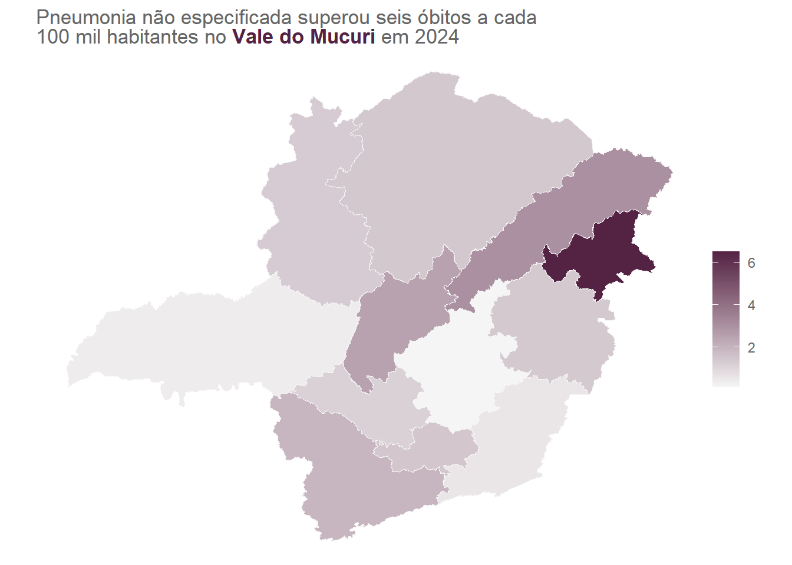
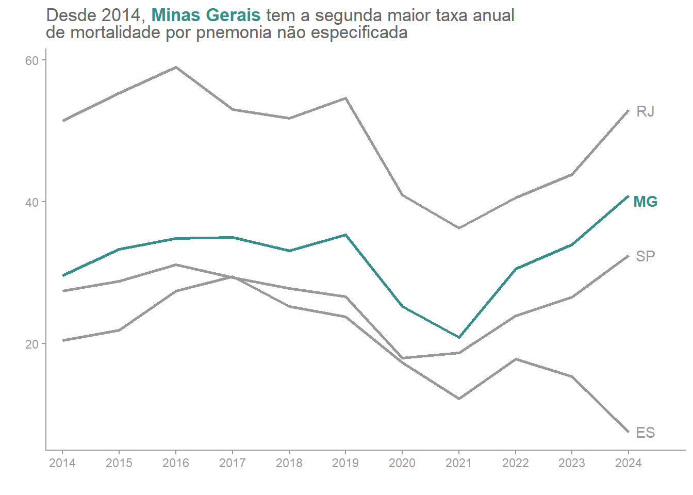
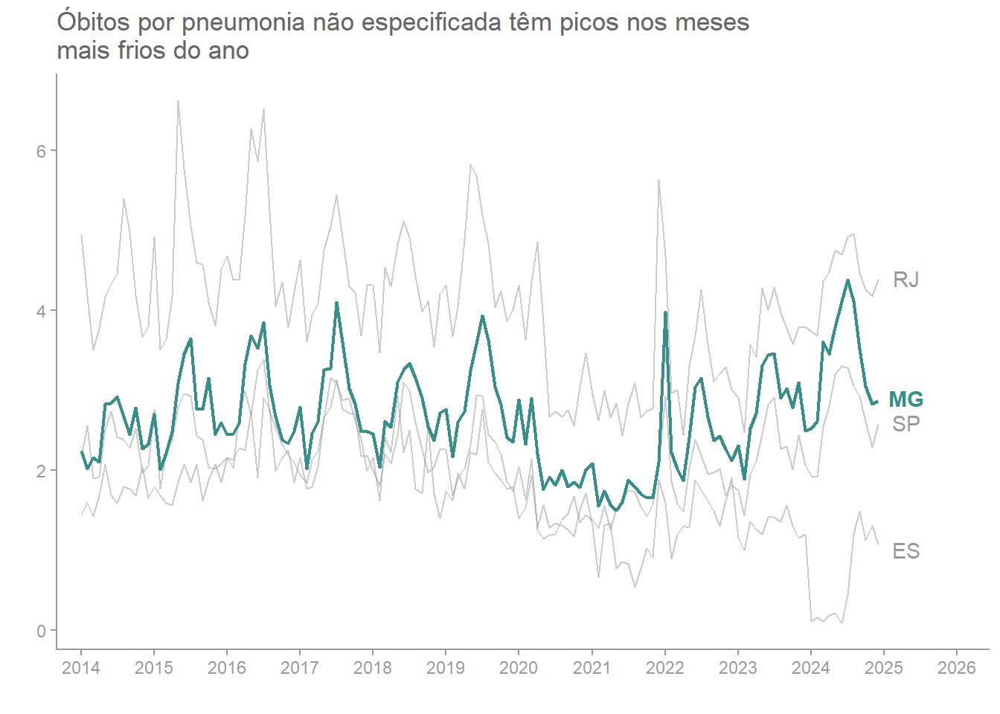
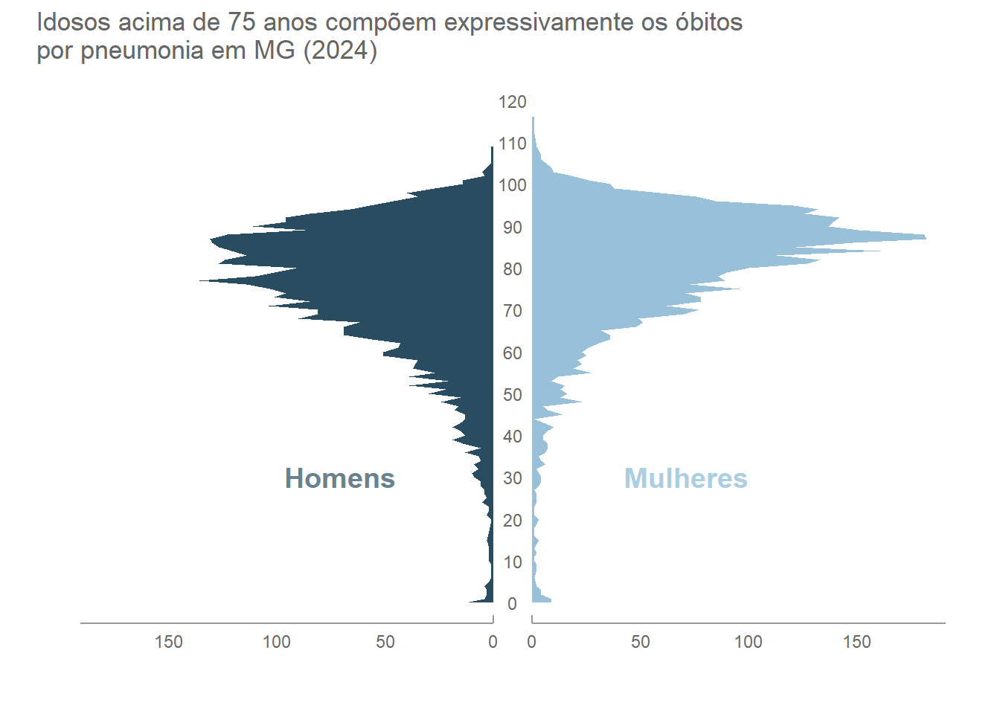

Mortalidade por pneumonia não especificada em Minas Gerais
r
visualização de dados
relatório para a matéria optativa de visualização de dados avançada. o trabalho consistia na coleta de dados provenientes do datasus, juntamente com a construções de belos visuais para análise e interpretação dos dados.
Introdução
Desenvolvido pelo Ministério da Saúde em 1975, o Sistema de Informações sobre Mortalidade (SIM) tem como finalidade registrar, processar e disponibilizar dados referentes aos óbitos ocorridos em todo território brasileiro. O sistema fornece informações abrangentes que permitem a criação de indicadores de saúde, como taxa de mortalidade geral, infantil e por causas específicas, possibilitando compreender o comportamento de doenças e padrões de mortalidade no Brasil.
Na saúde pública, o SIM desempenha um papel fundamental, uma vez que o monitoramento de seus dados auxiliam gestores governamentais na avaliação, criação, planejamento e implementação de políticas públicas e intervenções voltadas à prevenção de doenças. Além disso, possibilita identificar regiões que demandam maior atenção e alocação de recursos. Todos esses fatores evidenciam como o Sistema de Informações sobre Mortalidade é uma ferramenta crucial para a vigilância epidemiológica do Brasil.
O presente trabalho busca analisar partir dos dados disponibilizados pelo SIM o comportamento da pneumonia não especificada, causa de mortalidade com maior número de óbitos em Minas Gerais no ano de 2024.
Objetivos
Este relatório tem como objetivo analisar o comportamento e o perfil dos óbitos por pneumonia não especificada na região Sudeste do Brasil, evidenciando o estado de Minas Gerais, por meio da construção e análise de visualizações gráficas dos dados sobre mortalidade pela infecção pulmonar.
Metodologia
Para obtenção dos dados fornecidos pelo SIM, utilizou-se o pacote microdatasus do R, que apresenta funções destinadas ao download e ao pré-processamento dos arquivos disponibilizados pelo DataSUS. Os dados extraídos, inicialmente, foram apenas sobre óbitos no estado de Minas Gerais no ano de 2024, porém com o aprofundamento da análise, passaram a ser incorporados também dados dos demais estados da região sudeste a partir de 2014
Além das informações sobre mortalidade, também foi necessária a utilização de dados populacionais e geoespaciais. Os dados populacionais brasileiros, referentes aos Censos Demográficos de 2010 e 2022, foram coletados atráves do portal SIDRA, do Instituto Brasileiro de Geografia e Estatística (IBGE). Já os dados geoespaciais foram adquiridos com o auxílio do pacote geobr, desenvolvido pelo Instituto de Pesquisa Econômica Aplicada (IPEA).
Com todos os dados necessários reunidos, iniciou-se o processo investigativo com intuito de identificar a causa que obteve o maior número de óbitos no estado de Minas Gerais no ano de 2024. A partir de uma filtragem simples dos registros, descobriu-se que foi J189, código CID-10 que refere-se a pneumonia não especificada. A pneumonia não especificada caracteriza-se pela infecção nos alvéolos pulmonares cujo agente causador (vírus, bactéria ou fungo) da não é identificado nos registros clínicos.
Foram elaboradas três visualizações principais para a análise dos dados. A primeira apresenta a evolução temporal da taxa de óbitos por estado da região Sudeste desde 2014. Para suua construção, foi calculada a taxa anual de mortalidade por 100.000 habitantes, utilizando os dados populacionais dos Censos Demográficos como base. A partir dessa análise temporal, foi criado um segundo gráfico que trás a periodicidade mensal desde 2014 com objetivo de identificar possíveis padrões sazonaisna ocorrência dos óbitos.
A segunda visualização sai do âmbito das grandes regiões do país e passa a analisar as mesorregiões de Minas Gerais através de um mapa de calor. Assim como na análise temporal, utilizou-se novamente a taxa de mortalidade a cada 100.000 habitantes. Além da utilização dos dados populacionais, a construção desse mapa coroplético exigiu também a integração com a base de dados geoespaciais.
Por fim, com o intuito de entender o perfil demográfico das vítimas de pneumonia não especificada, foi construída uma pirâmide etária para entender quais faixas etárias se concentram a maior quantidade de óbitos.
Resultados
Na região Sudeste, apesar de São Paulo ser o estado com maior número absoluto de óbitos por pneumonia não especificada, o estado do Rio de Janeiro é o que apresenta maior taxa de mortalidade pela infecção pulmonar. Dentre os quatro estados da região, o único que apresenta comportamento de queda é o Espírito Santo, além de ser o com menor taxa de mortes. É importante destacar os anos de 2020 e 2021, durante esse período houve queda geral na região, isso pode estar relacionado à pandemia de COVID-19 que o mundo enfrentava na época.


Na figura à direita, temos novamente a taxa de mortalidade por pneumonia não especificada nos estados da região Sudeste, porém sob uma perspectiva mensal. É possível notar que os óbitos pela infecção apresentam um comportamento sazonal bem definido ao longo da série histórica, em que os picos de mortes ocorrem no meio do ano, período que coincide com os meses mais frios.
Passando a analisar apenas o estado de Minas Gerais em 2024, quando dividido em mesorregiões, as taxas mais elevadas estão nas regiões Central Mineira, Jequitinhonha e Vale do Mucuri, esse último se destaca quando comparado ao restante do estado, pois apresenta uma taxa que supera seis óbitos por 100 mil habitantes, o dobro quando contraposto a qualquer outra região do estado. Essa disparidade levanta questões sobre o possível acesso limitado à saúde e as questões socioeconômicas da mesorregião.
A mortalidade por pneumonia não especificada em Minas Gerais no ano de 2024 afeta principalmente a população idosa do estado, pessoas com mais de 75 anos compõem aproximadamente 34% dos óbitos pela infecção. Entre os homens, óbitos se distribuem de maneira expressiva a partir dos 70 anos, já para as mulheres a concentração é mais elevada em na faixa acima dos 80, isso condiz com a maior expectativa de vida das mulheres.

Conclusões
Os dados analisados revelam que a mortalidade por pneumonia não especificada apresenta no Sudeste, com ênfase em Minas Gerais, certos padrões como a maior incidência em meses frios e a ocorrência expressiva em idosos acima de 80 anos. Além disso, dentro do estado há disparidades regionais que torna nítido a discrepância de políticas de saúde no estado.